Proof by accurate drawing
Geometry is drawing out diagrams and finding their properties. Most of the time, this requires some magical observation (or not very magical observation if you are very good at Geometry) that takes quite some time to find. However, time is short during short answer contests like the SMO. As a result, I have been telling my friends to “skip all Geom” or “bash if you can”. However, skipping all Geometry related questions lose quite a lot of marks and bashing is not always the fastest option. What if you can get your answer faster?
Geometry deals with diagrams that you can draw and see. So usually, you can see the answer right if front of you. Why not just take it? They will not know in a short answer contest anyways. Although drawing the figure and measuring out the answer is not as elegant or satisfying as finding it properly, it is a great option in the SMO. We will proceed to learn how to do this.
your tools
We will only need a ruler and a compass for this, both allowed in SMO. It is certainly unreasonable to expect a student to solve a Geometry problem without a diagram, so banning these tools is not a great idea. You can say that they can ban rulers but not straightedges, but that is also not quite feasible. If you search on Google for a straightedge and go to images, most of them (that is not just a metal bar) actually have some form of markings. You also cannot find a straightedge in most bookshops, making them inaccessible to students.
For the ruler, Evan Chen recommends (yes that is his handout on constructing diagrams) to use one with perpendicular markings. I believe that should not be a significant issue since rulers have “perpendicular markings” in the form of lines on their edges. For my diagrams, since I draw them online using the app Notability, I will be using the Notability ruler shown below. This is before I switched to CollaNote, but the tools in CollaNote are similar. You can pretend the angle measurement does not exist as I will not be making references to that. Note that protractors are banned in the SMO. (no one is stopping you from bypassing that with Trig though)
The Notability ruler:
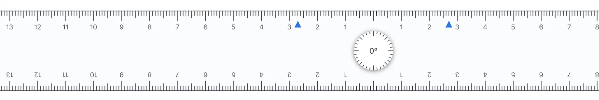perpendicular markings:
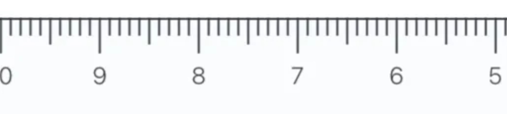The compass is the standard one that you can find in any Mathematical instruments set. In case you do not know how to use it, you are to put a pencil into the circular holder, mark out the centre with the pointed end and trace a circle with the pencil around it without adjusting the angle between or the height of the arms. Below is an image.
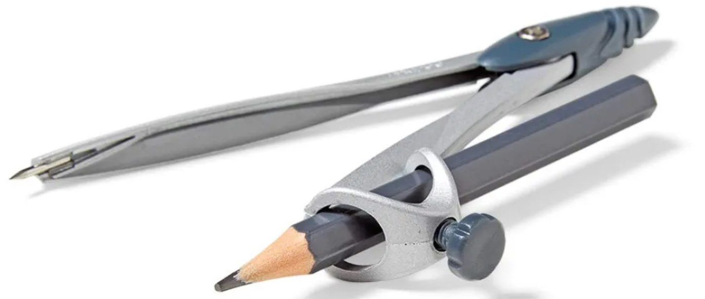I will not be going through all constructions as some are very rarely used. Others are simply too easy, such as the midpoint (you have a ruler), equal lengths (radii of a circle), or centroid (concurrency of medians).
Triangle given side lengths
In SMO, the problem often involves a triangle with all 3 sides known. This can be seen in statements such as “triangle ABC with AB = 7, BC = 8, AC = 9” or “construct a triangle with sides 7, 8, 9”.
We will consider constructing a triangle with given sides a, b, c, assuming without loss of generality that a < b < c.
Step 1: Construct a segment of length c. It is not required that c is the greatest side length but choosing c to be so will simplify the construction later.
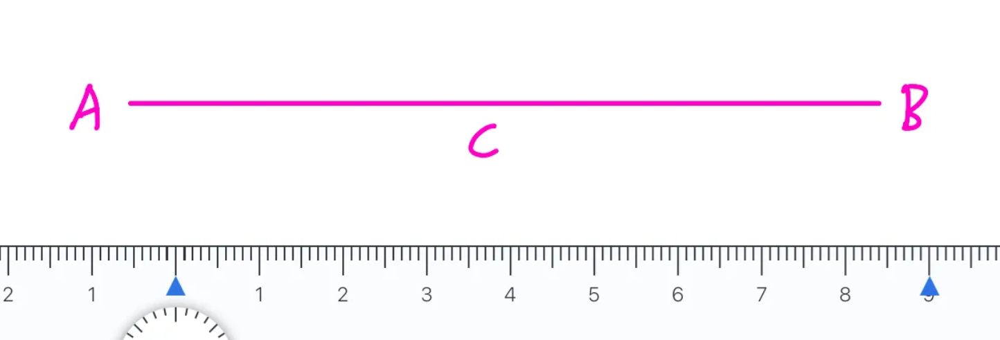Step 2: Contruct a circle of radius b centred at A and another circle of radius a centred at B. These circles will not appear in the final diagram. It is ok to draw only parts of these circles as long as the drawn arcs intersect at some point.
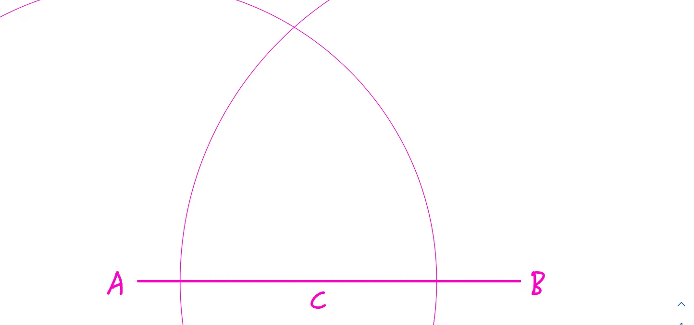Step 3: The intersection of the 2 circles is C. Connecting AC and BC, the triangle is constructed.
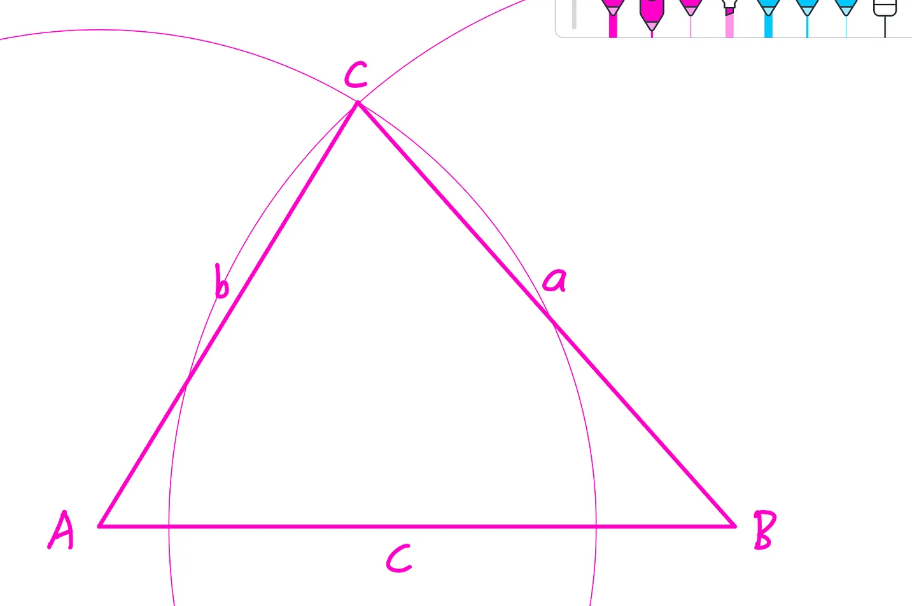And thus the construction is complete.
Perpendicular lines
This is extremely simple, but may confuse you a bit. Didn’t we all learn in primary school that you need 2 rulers to construct perpendicular lines? Even with a compass, the construction is still not the simplest. We can now use the perpendicular markings on our ruler by constructing a perpendicular line PH from a point P to a line AB.
Step 1: Align the perpendicular markings to line AB. Note the blue circles in the image, showing that the markings are properly aligned. If your ruler has perpendicular markings on both sides, pay attention to align both. Otherwise, use the longest possible marking to reduce error.
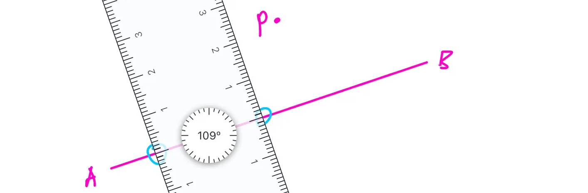Step 2: Slide the ruler along AB until you reach P. Constructing a line through P will give the required construction.
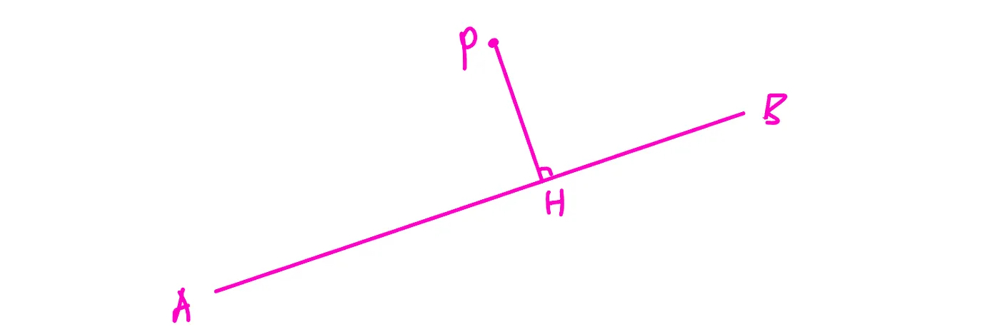Now, you should be also able to construct parallel lines (do this twice), orthocentres (intersection of altitudes), perpendicular bisectors (P is midpoint of AB), and circumcentres (intersection of perpendicular bisectors). The ability to construct the circumcentre and thus circumcircle of any 3 points can be used for constructing triangle centres.
Angle bisectors
This annoying construction messes up almost every single coordinate system, but can be bypassed through directly measuring the answer. Consider that we want to construct the angle bisector of some angle ABC.
Step 1: Construct a circle of any size centred at B. Label its intersection with AB as X and that for BC as Y. For convenience, the circle should not have a radius longer than AB or BC. (please use common sense) The circle will not be included in the final construction.
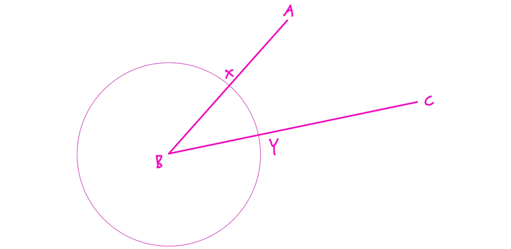Step 2: Construct 1 circle each around X and Y with equal radius, ensure that the circles intersect.
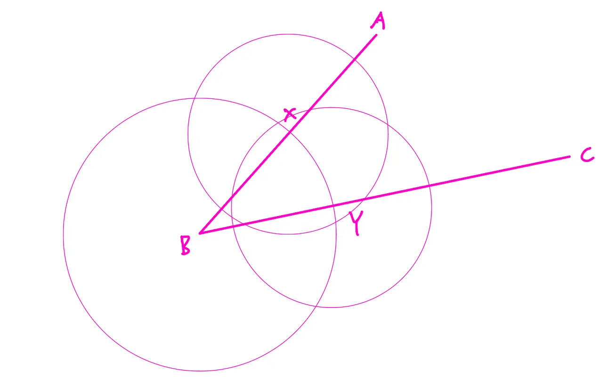Step 3: Connecting the intersections of the 2 circles in step 2 with a straight line, we get the required angle bisector. This line passes through B if constructed correctly. The proof is by triangle congruency caused by symmetry across the angle bisector.
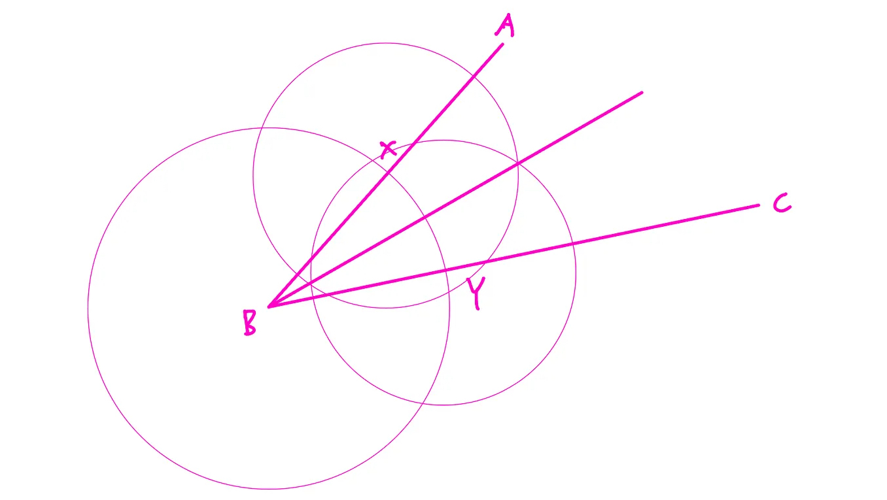Constructing angle bisectors also allows for the construction of the incentre or the excentres, which can be done easily by intersecting the angle bisectors. The incircle and excircles can also be constructed by dropping a perpendicular to relevant sides from their centre as the radius.
Tangents to circles
The last thing that we will cover is constructing tangents from a point to a circle. While it is certainly true that you can do so directly by rotating the ruler until it touches the circle, there are more precise ways to carry out this construction. We will be constructing a tangent PT to a circle C with centre O.
Step 1: Construct a circle with diameter OP. This can be done by centering the circle at the midpoint of line OP and letting it pass through P. This circle will not be part of the final diagram.
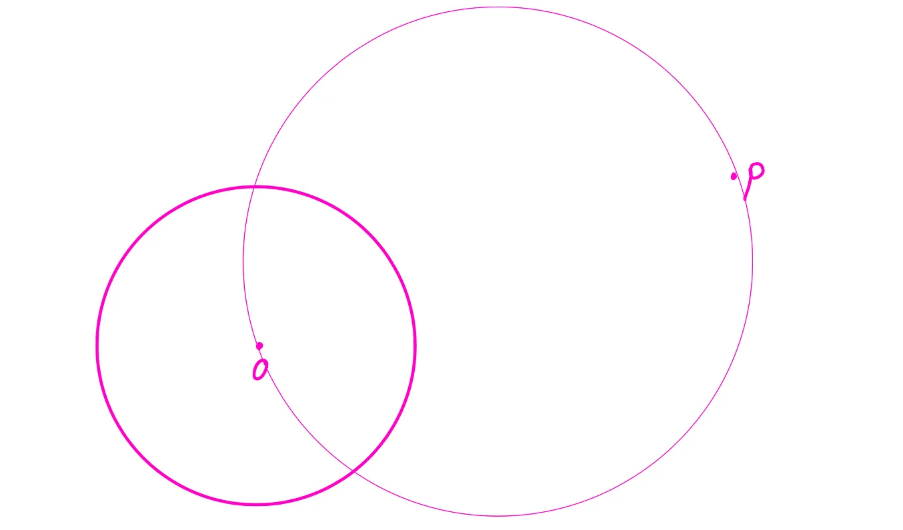Step 2: Connecting any of the 2 intersections of the 2 circles to P, we have the required tangent. Let the intersection be T. The proof for this is that OP is the diameter of the circumcircle of triangle OPT, giving angle OTP to be 90 degrees. Since T is also on circle C, PT is a tangent to circle C.
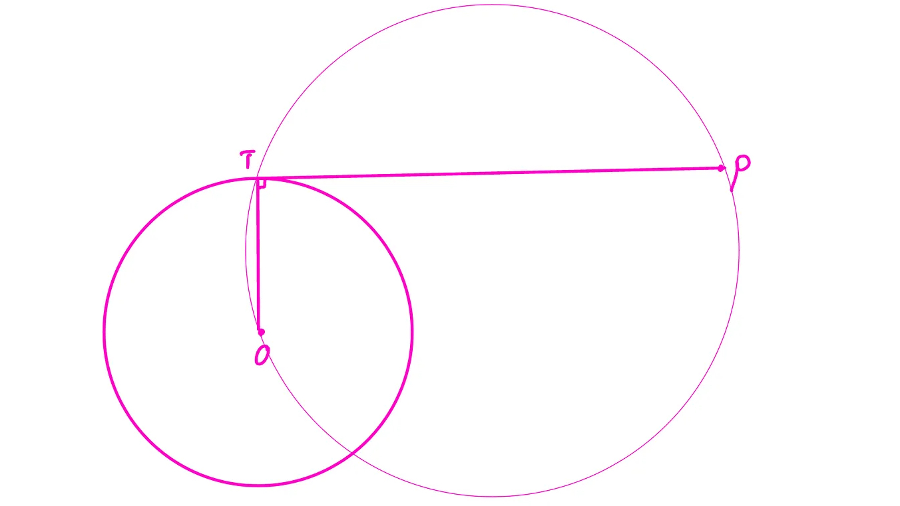Mapping and error correction
The advantage of the “measuring the answer” method in SMO is that all answers must be nonnegative integers at most 99999, a restriction imposed by the answer sheet in use. This allows for minor errors, where the student can simply round off his measured answer to the nearest integer and hope for the likely event that he gets the question correct. However, sometimes the lengths may get quite large.
If the numbers get too large, even very small errors can cause the student to be unsure of the answer. Sometimes, the SMS scale up the values used in problems just for this. If that is the case, simply scale the diagram back, retrieve an accurate answer, then scale it up again. This can be seen in questions where all lengths used are multiples of a certain constant.
Also remember to draw a suitably sized diagram. If the diagram is too large, the paper will not fit and it is easy to see why that is not a good idea. If the diagram is too small, errors are more significant, potentially leading to an inaccurate answer.
With all these precautions in place, using this method for the SMO, especially for students bad at Geometry, can result in a gain of at most 6 marks. This method is definitely a great way to solve Geometry questions in short answer contests.